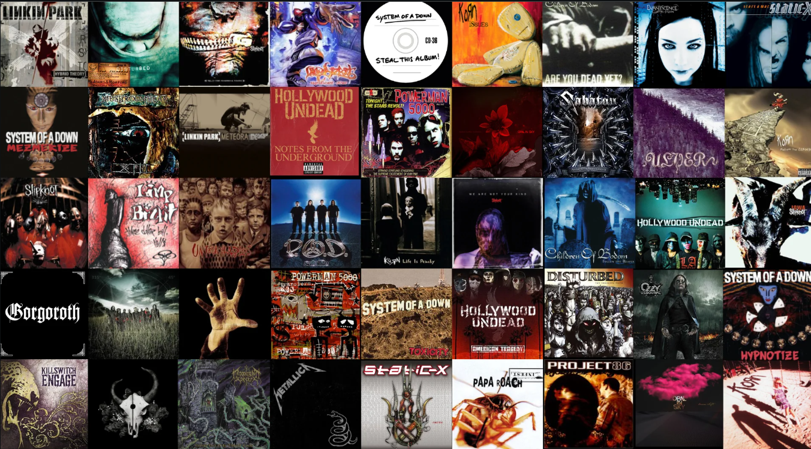

¡Conectemos!

Si también disfrutas del nu metal, la guitarra, el bajo o simplemente quieres conocer un poco más sobre mis gustos musicales, puedes visitar las redes sociales disponibles en este sitio.

Si también disfrutas del nu metal, la guitarra, el bajo o simplemente quieres conocer un poco más sobre mis gustos musicales, puedes visitar las redes sociales disponibles en este sitio.